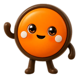

처음 만나는 닷패드
담당자 안내와 함께, 한 장씩 듣고 손끝으로 탐색해 보세요.

DOT BUDDY체험 세션DOT PAD GUIDED EXPERIENCE
체험 자료를 준비하고 있어요. 준비가 끝나면 바로 시작할 수 있어요.
체험 자료를 준비하고 있어요.
브라우저가 파일을 직접 열지 못하게 막고 있어요. 폴더에서 npx serve . 를 실행하고 다시 열거나,
아래에서 .dtms/.dtma 파일과(있다면) .dtm 자산·오디오 파일을 함께 선택하세요.
첫 페이지가 준비되면 바로 시작할 수 있어요. 나머지 내용은 조용히 이어서 불러옵니다.
HOW THE SESSION WORKS
참여자, 보호자, 담당자가 같은 흐름을 보며 체험을 이어갈 수 있어요.
담당자의 짧은 안내와 슬라이드별 TTS를 언제든 다시 들을 수 있어요.
화면의 촉각 미리보기와 실제 Dot Pad가 같은 내용을 보여줘요.
진행 기록을 바탕으로 보호자·기관에 필요한 도입 정보를 연결해요.
담당자 안내와 함께, 한 장씩 듣고 손끝으로 탐색해 보세요.
교육, 도서관, 기관 환경에 맞는 Dot Pad 정보를 받아보세요.
지역별 공식 리셀러와 제품·구매 문의 경로를 확인할 수 있어요.
리셀러 목록 보기—
다른 자료 불러오기로 .dtms/.dtma 본문과 .dtm 자산·오디오 파일을 한 번에 선택할 수 있어요.
아이는 길쭉한 동그라미 버튼으로 답하고, 세모 버튼으로 점자 줄을 넘겨요.
부모용 키 — 1~4 답하기 · → 다음 · ← 이전 · ↓↑ 점자 줄 · R 다시 듣기 · H 도움말